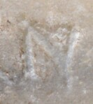

N - type1.1.1
- Script
- Latin
- Grapheme
- N
- Allograph
- type1.1.1
- Characteristic form:
-
- left-stroke is sans serif
- left-stroke is straight
- left-stroke is vertical
- middle-bar is diagonal
- middle-bar is narrow
- right-stroke is sans serif
- right-stroke is straight
- right-stroke is vertical
Typology
More general types
type1, type1.1Exemplar

Origin: Thermae Himeraeae
between AD 301 and AD 400